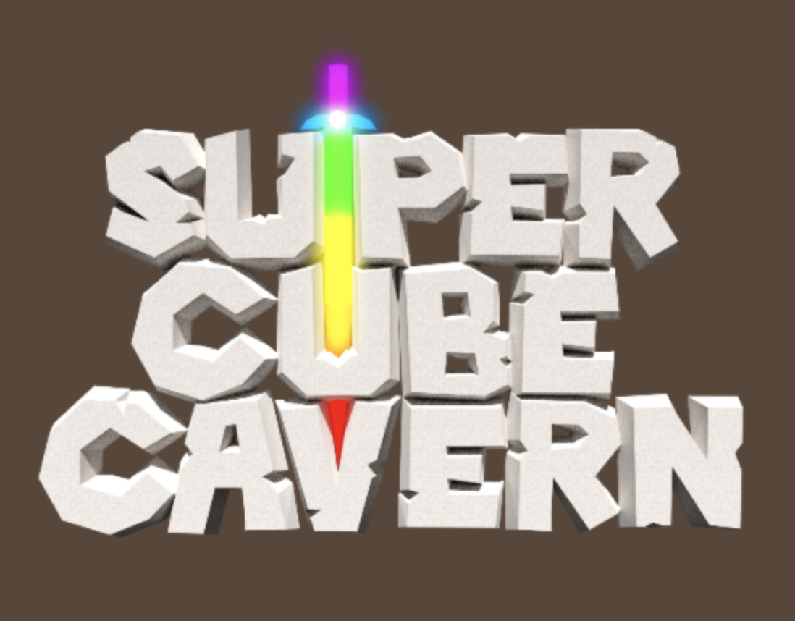
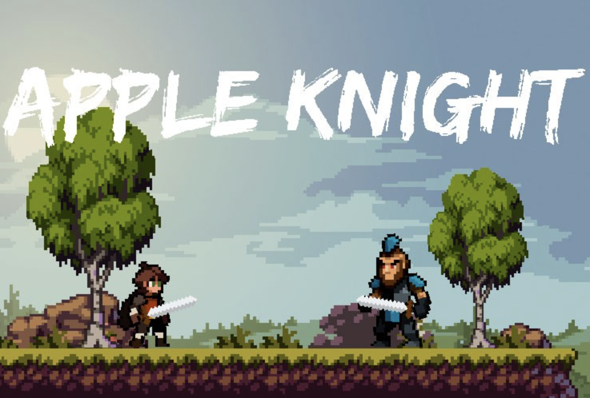

Rise of Nations
Rise of Nations is a game where you can play as a country. You can expand your economy by building factories and devloping your cites. Take some time to research different types of tech, allowing you gain bonuses such as more taxes. Enable policies to better help your country, and choose your own ideolgy. Go to war with other countries and defend your mainland. Use biomes and geographical advantages to help seal victory! Create factions and make allies with other nations. Reclaim the past as your form old and fiction empires, such as the North American Union, or the Roman Empire. Make sure to make the right choices, or else your country can be plagued with coruption, instability, and economic depression. Make the right chocies and your nation can be gifted with economic boom, a better stock market, and overall more taxes. The possiblities are endless!
Super Cube Cavern

Super Cube Caverns is a amazing game based on caverns. Long ago, the sun began to fade and the surface became cold. The inhabitents of the surface were forced to move down into the ground to protect themself from the cold. They built a village underneath centered around a large tree that has been mysterious began to decay recently. In Super Cube Caverns your able to explored and battle monsters in the caves. Use the surrounding materials to craft weapons and tools to help you better explore this strange world. Meet other players in the village to talk or to trade items. Team up with friends to find rare materials, to explore the secrets of this unknown world. Buy new items in the shop to better customize your character. Maybe one day we can make a eventual return to the surface?
Apple Knight

Apple knight is a singleplayer game avaible on mobile, and nintendo switch. A evil wizard rules the land and sends his minions to remove anyone who is deemed a threat to him. Your character, along with the help of a friendly wizard Garraldin, are able to travel through the lands in order to face the evil wizard and put a end to his regime. Use coins to unlock new powerful abilities, armours, and weapons. Use these new items and abilities to defeat the minions that stand in your way. With four levels to play Apple Knight has wonderful pixel graphics. It is one of the best rpg games to play on mobile devices, with good controls, story, and gameplay. You can adjust the difficult to best fit your play style. Good luck on your quest in defeating the evil wizard, and finally bring peace throughout the land!